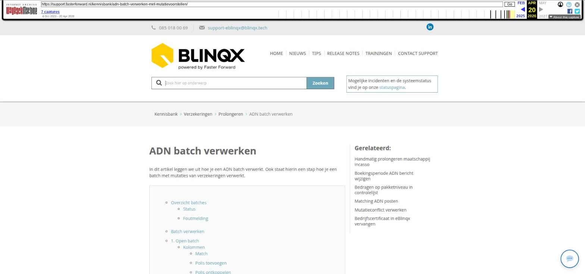

Offertesysteemstatussen indelen

Tekstinhoud
Offertesysteemstatussen indelen
Beschikbaar in: eBlinqx Compleet, Verzekering Provinciaal, Hypotheek Totaal
De offertestatussen zijn onder te verdelen in 3 offertesysteemstatussen. Hierdoor is de status van een product of offerte duidelijker. De 3 offertesysteemstatussen zijn:
Nieuw: groen
Lopend: blauw
Beëindigd: rood
Deze kleuren in de icoontjes worden weergegeven in het klantdossier en in de Track & Trace module.
Onderverdelen vanuit offertesysteemstatus
1. Ga naar overzicht
2. Voeg offertestatussen toe
Onderverdelen vanuit de offertestatus
Primaire status
Onderverdelen vanuit offertesysteemstatus
Een deel van de statussen hebben we al voor je onderverdeeld. Voor een correcte werking van je eBlinqxomgeving is het belangrijk dat je deze onderverdeling controleert en aanvult!
Wanneer je dit inricht, doe je dit voor de eBlinqxomgeving van je gehele organisatie. Je bepaalt zelf welke offertestatus je aan een bepaalde offertesysteemstatus onderverdeeld. Elke status kan maar aan één systeemstatus worden gekoppeld.
Om dit in te richten, moet je deze offertestatussen zelf toevoegen onder 'Offertesysteemstatussen'. In deze beheermodule verdeel je alle statussen onder in één van de drie categorieën: Nieuw, lopend of beëindigd.
Het indelen van de offertesysteemstatussen doe je als volgt:
1. Ga naar overzicht
Zoek in het menu naar 'Offertesysteemstatus'. In het overzicht zie je de 3 statussen: Nieuw, Lopend en Beëindigd.
Klik vervolgens op het 'Wijzigicoon' aan het einde van de regel.
2. Voeg offertestatussen toe
In het onderstaande voorbeeldscherm zie je links de beschikbare offertestatussen. Deze zijn nog niet aan een offertesysteemstatus toegekend.
Gebruik het → pijltje (naar rechts) om offertestatussen onder te verdelen in de offertesysteemstatus '
Gebruik het ← pijltje (naar links) om offertestatussen los te koppelen van de offertesysteemstatus. Als je dit gedaan hebt, kun je de offertestatus onderverdelen aan een andere offertesysteemstatus.
Sla op linksboven.
Onderverdelen vanuit de offertestatus
Je kunt de offertestatussen ook onderverdelen vanuit het tabblad 'Offertestatus'.
Klik hiervoor op het 'Wijzigicoon' achter de offertestatus.
2. Kies vervolgens de bijbehorende offertesysteemstatus en sla op.
Primaire status
Ook is het van belang om de primaire status per offertesysteemstatus in te vullen. Vanuit mutatievoorstellen is het mogelijk om een verzekeringspakket in een keer te royeren. Om het pakket en bijbehorende polissen de juiste productstatus te geven moet de primaire status gevuld zijn. Na het royeren krijgt het pakket de productstatus die staat geselecteerd bij 'Primaire status'. Hetzelfde geldt voor de statussen Nieuw en Lopend. Ook hier kan je een primaire status selecteren.
Laatste update: 21 mei 2024
Was deze informatie nuttig?
Ja Nee